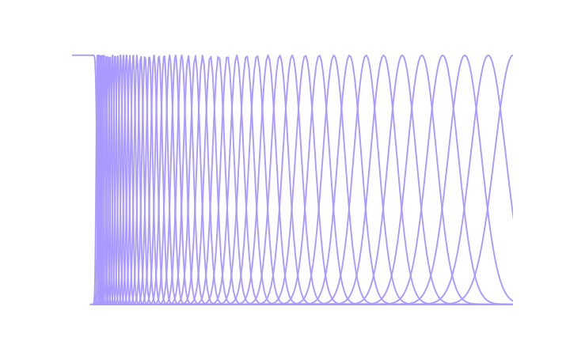
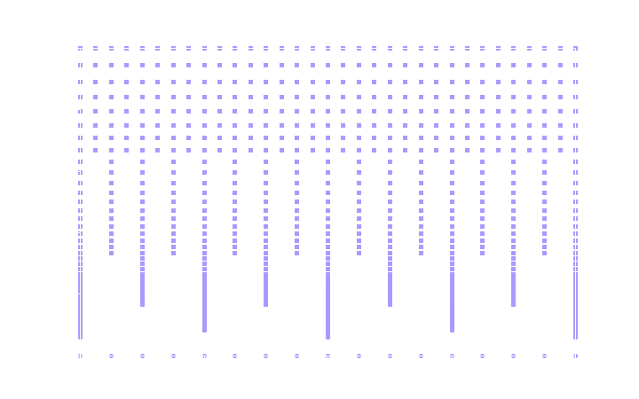
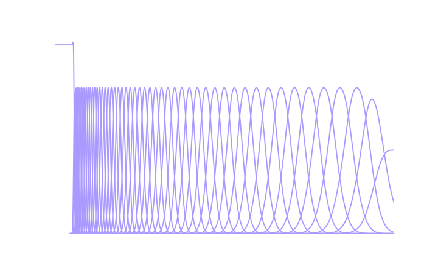

The Gaborator performs three main functions:
The following sections give a high-level overview of each of these functions.
The first step of the analysis is to run the signal through an analysis filter bank, to split it into a number of overlapping frequency bands.
The filter bank consists of a number of logarithmically spaced Gaussian bandpass filters and a single lowpass filter. Each bandpass filter has a bandwidth proportional to its center frequency, which means they all have the same quality factor Q and form a constant-Q filter bank. The highest-frequency bandpass filter will have a center frequency close to half the sample rate; in the graphs below, this is simple labeled 0.5 because all frequencies in the Gaborator are in units of the sample rate. The lowest-frequency bandpass filter should be centered at, or slightly below, the lowest frequency of interest to the application at hand. For example, when analyzing audio, this is often the lower limit of human hearing; at a sample rate of 44100 Hz, this means 20 Hz / 44100 Hz ≈ 0.00045. This lower frequency limit is referred to as the minimum frequency or fmin.
Although frequencies below fmin are assumed to not be of interest, they nonetheless need to be preserved to achieve perfect reconstruction, and that is what the lowpass filter is for. Together, the lowpass filter and the bandpass filters overlap to cover the full frequency range from 0 to 0.5.
The spacing of the bandpass filters is specified by the user as an integer number of filters (or, equivalently, bands) per octave. For example, when analyzing music, this is often 12 bands per octave (one band per semitone in the equal-tempered scale), or if a finer frequency resolution is needed, some multiple of 12.
The following plot shows the frequency responses of the analysis filters at 12 bands per octave and fmin = 0.03. A more typical fmin for audio work would be 0.00045, but that would make the plot hard to read because both the lowpass filter and the lowest-frequency bandpass filters would be extremely narrow.
The output of each bandpass filter is shifted down in frequency to a complex quadrature baseband. The baseband signal is then resampled at a reduced sample rate, lower than that of the orignal signal but high enough that there is negligible aliasing given the bandwidth of the filter in case. The Gaborator uses sample rates related to the original signal sample rate by powers of two. This means some of frequency bands are sampled a bit more often than strictly necessary, but has the advantage that the sampling can be synchronized to make the samples of many frequency bands coincide in time, which can be convenient in later analysis or spectrogram rendering. The complex samples resulting from this process are the spectrogram coefficients.
The center frequencies of the analysis filters and the points in time at which they are sampled form a two-dimensional, multi-resolution time-frequency grid, where high frequencies are sampled sparsely in frequency but densely in time, and low frequencies are sampled densely in frequency but sparsely in time.
The following plot illustrates the time-frequency sampling grid corresponding to the parameters used in the previous plot. Note that frequency was the X axis in the previous plot, but is the Y axis here. The plot covers a time range of 128 signal samples, but conceptually, the grid extends arbitrarily far in time, in both the positive and the negative direction.
Resynthesizing a signal from the coefficients is more or less the reverse of the analysis process. The coefficients are frequency shifted from the complex baseband back to their original center frequencies and run through a reconstruction filter bank that is a dual of the analysis filter bank. The following plot shows the frequency responses of the reconstruction filters corresponding to the analysis filters shown earlier.
Although the bandpass filters may look similar to the Gaussian filters of the analysis filter bank, their shapes are actually subtly different.
Rendering a spectrogram image from the coefficients involves taking the magnitude of each complex coefficient, and then resampling the resulting multi-resolution grid of magnitudes into an evenly spaced pixel grid.
Because the coefficient sample rate varies by frequency band, the resampling required in the horizontal (time) direction also varies. Typically, the high-frequency bands of an audio spectrogram have more than one coefficient per pixel and require downsampling (decimation), some bands in the mid-range frequencies have a one-to-one relationship between coefficients and pixels, and the low-frequency bands have more than one pixel per coefficient and require upsampling (interpolation).